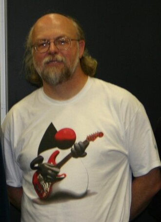

Gosling was born in Calgary, Alberta, to Joyce Morrison and Dave Gosling. He is of English, Welsh, Scottish, and Icelandic descent. Gosling attended William Aberhart High School. While in high school, he wrote some of the software to analyze data from the ISIS 2 satellite, working for the University of Calgary physics department.received a Bachelor of Science from the University of Calgary and his M.A. and Ph.D. from Carnegie Mellon University, all in computer science. He wrote a version of Emacs called Gosling Emacs (Gosmacs) while working toward his doctorate. He built a multi-processor version of Unix for a 16-way computer system while at Carnegie Mellon University, before joining Sun Microsystems.

Джеймс Гослинг
Career and contributions
Gosling joined Sun Microsystems in 1984, where he worked for the next 26 years. At Sun he invented an early Unix windowing system called NeWS, which became a lesser-used alternative to the still used X Window System, because Sun did not give it an open source license.
He is known as the father of the Java programming language. He got the idea for the Java VM while writing a program to port software from a PERQ by translating Perq Q-Code to VAX assembler and emulating the hardware. He is generally credited with having invented the Java programming language in 1994. He created the original design of Java and implemented the language's original compiler and virtual machine. Gosling traces the origins of the approach to his early graduate student days, when he created a p-code virtual machine for the lab's DEC VAX computer, so that his professor could run programs written in UCSD Pascal. In the work leading to Java at Sun, he saw that architecture-neutral execution for widely distributed programs could be achieved by implementing a similar philosophy: always program for the same virtual machine.
Страна в которой родился Джеймс Гослинг
Another contribution of Gosling's was co-writing the "bundle" program, known as "shar", a utility thoroughly detailed in Brian Kernighan and Rob Pike's book The Unix Programming Environment.
He left Sun Microsystems on April 2, 2010, after it was acquired by the Oracle Corporation, citing reductions in pay, status, and decision-making ability, along with change of role and ethical challenges. He has since taken a very critical stance towards Oracle in interviews, noting that "during the integration meetings between Sun and Oracle, where we were being grilled about the patent situation between Sun and Google, we could see the Oracle lawyer's eyes sparkle." He clarified his position during the Oracle v. Google trial over Android: "While I have differences with Oracle, in this case they are in the right. Google totally slimed Sun. We were all really disturbed, even Jonathan [Schwartz]: he just decided to put on a happy face and tried to turn lemons into lemonade, which annoyed a lot of folks at Sun." However, he approved of the court's ruling that APIs should not be copyrightable.
In March 2011, Gosling joined Google. Six months later, he followed his colleague Bill Vass and joined a startup called Liquid Robotics. In late 2016, Liquid Robotics was acquired by Boeing. Following the acquisition, Gosling left Liquid Robotics to work at Amazon Web Services as Distinguished Engineer in May 2017.
He has worked as an advisor at the Scala company Lightbend, Independent Director at Jelastic, and Strategic Advisor for Eucalyptus, and is a board member of DIRTT Environmental Solutions.
On July 2, 2024, Gosling announced he had officially retired.
Молодость
Технологии разработки веб-интерфейсов стремительно развиваются, превращая верстку сайтов в сложное инженерное искусство. Современный фронтенд требует глубокого понимания принципов адаптивности, доступности и производительности, где каждый элемент интерфейса обязан корректно отображаться на любых экранах. Использование гибких сеток Flexbox и CSS Grid позволяет создавать динамичные структуры, которые мгновенно подстраиваются под разрешения мобильных телефонов или мониторов. Однако визуальный стиль — лишь половина успеха, ведь сайт должен загружаться быстро. Оптимизация кода, минимизация стилей и сжатие графики становятся критически важными этапами работы. Не менее важна и семантика: валидный структурированный HTML помогает поисковым роботам индексировать страницы, а программам экранного доступа — делать контент понятным для людей с ограниченными возможностями. В конечном итоге качественная верстка связывает дизайн и программирование, превращая статичный макет в живой и удобный интерфейс.
Awards
For his achievement, the National Academy of Engineering in the United States elected him as a Foreign Associate member.
: awarded The Economist Innovation Award.
: awarded The Flame Award USENIX Lifetime Achievement Award.
: made an Officer of the Order of Canada. The Order is Canada's second highest civilian honor. Officers are the second highest grade within the Order.
: became a fellow of the Association for Computing Machinery.
: awarded IEEE John von Neumann Medal
: named a Computer History Museum Fellow for the conception, design, and implementation of the Java programming language.